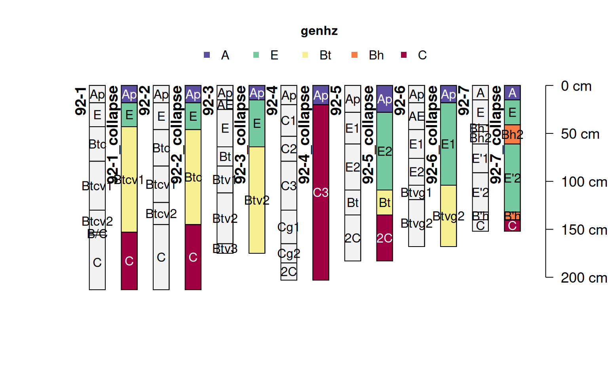
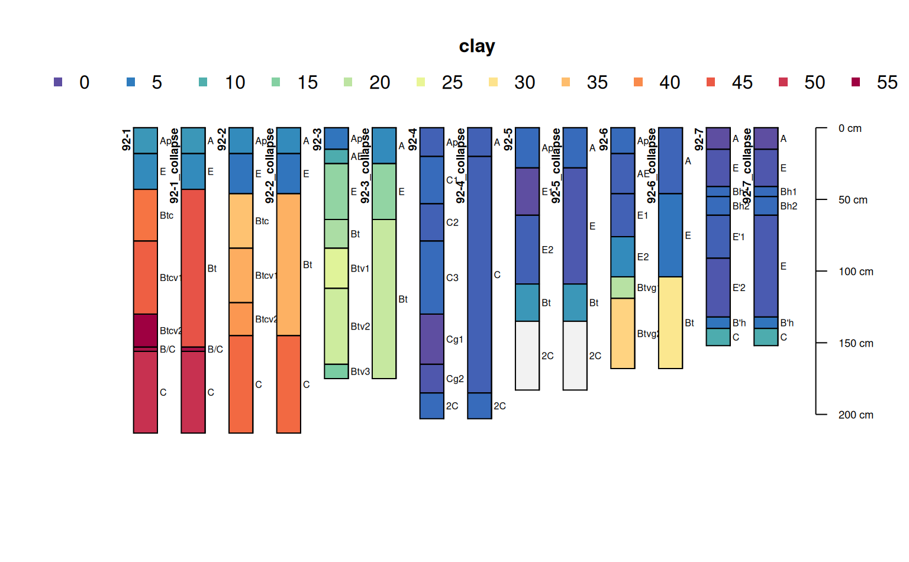

Combines layers and aggregates data by grouping adjacent horizons which match pattern in
hzdesgn or, alternately, share a common value in by argument. Numeric properties are combined
using the weighted average, and other properties are derived from the dominant condition based on
thickness of layers and values in each group.
collapseHz(
x,
pattern = NULL,
by = NULL,
hzdesgn = hzdesgnname(x, required = TRUE),
FUN = function(x, pattern, hzdesgn, ...) grepl(pattern, x[[hzdesgn]], ignore.case =
FALSE),
...,
AGGFUN = NULL,
ignore_numerics = NULL,
na.rm = FALSE
)A SoilProfileCollection
character. A regular expression pattern to match in hzdesgn column. Default:
NULL.
character. A column name specifying horizons that should be combined. Aggregation
will be applied to adjacent groups of layers within profiles that have the same value in by.
Used in lieu of pattern and hzdesgn. Default: NULL.
character. Any character column containing horizon-level identifiers. Default:
hzdesgnname(x, required = TRUE).
function. A function that returns a logical vector equal in length to the number
of horizons in x. Used only when pattern is specified. See details.
Additional arguments passed to the matching function FUN.
list. A named list containing custom aggregation functions. List element names
should match the column name that they transform. The functions defined should take three
arguments: x (a vector of horizon property values), top (a vector of top depths), and
bottom (a vector of bottom depths). Default: NULL applies weighted.mean() to all numeric
columns not listed in ignore_numerics and takes the dominant condition (value with greatest
aggregate thickness sum) for all other columns. See details.
character. Vector of column names that contain numeric values which
should not be aggregated using weighted.mean(). For example, soil color "value" and
"chroma".
logical. If TRUE NA values are ignored when calculating min/max boundaries for
each group and in weighted averages. If FALSE NA values are propagated to the result.
Default: FALSE.
A SoilProfileCollection
If a custom matching function (FUN) is used, it should accept arbitrary additional arguments
via an ellipsis (...). It is not necessary to do anything with arguments, but the result should
match the number of horizons found in the input SoilProfileCollection x.
Custom aggregation functions defined in the AGGFUN argument should either return a single
vector value for each group*column combination, or should return a data.frame object with named
columns. If the input column name is used as a column name in the result data.frame, then the
values of that column name in the result SoilProfileCollection will be replaced by the output
of the aggregation function. See examples.
data(jacobs2000)
# calculate a new SPC with genhz column based on patterns
new_labels <- c("A", "E", "Bt", "Bh", "C")
patterns <- c("A", "E", "B.*t", "B.*h", "C")
jacobs2000_gen <- generalizeHz(jacobs2000, new = new_labels, pattern = patterns)
# use existing generalized horizon labels
i <- collapseHz(jacobs2000_gen, by = "genhz")
profile_id(i) <- paste0(profile_id(i), "_collapse")
plot(
c(i, jacobs2000),
color = "genhz",
name = "name",
name.style = "center-center",
cex.names = 1
)

# custom pattern argument
j <- collapseHz(jacobs2000,
c(
`A` = "^A",
`E` = "E",
`Bt` = "[ABC]+t",
`C` = "^C",
`foo` = "bar"
))
profile_id(j) <- paste0(profile_id(j), "_collapse")
plot(c(j, jacobs2000), color = "clay")

# custom aggregation function for matrix_color_munsell
k <- collapseHz(jacobs2000,
pattern = c(
`A` = "^A",
`E` = "E",
`Bt` = "[ABC]+t",
`C` = "^C",
`foo` = "bar"
),
AGGFUN = list(
matrix_color_munsell = function(x, top, bottom) {
thk <- bottom - top
if (length(x) > 1) {
xord <- order(thk, decreasing = TRUE)
paste0(paste0(x[xord], " (t=", thk[xord], ")"), collapse = ", ")
} else
x
}
)
)
profile_id(k) <- paste0(profile_id(k), "_collapse_custom")
unique(k$matrix_color_munsell)
#> [1] "10YR 4/1"
#> [2] "2.5Y 6/6"
#> [3] "10YR 6/8 (t=51), 10YR 5/8 (t=36), 10YR 6/8 (t=23)"
#> [4] NA
#> [5] "2.5YR 4/8"
#> [6] "10YR 2/2"
#> [7] "10YR 6/4"
#> [8] "10YR 5/8 (t=38), 10YR 6/8 (t=38), 10YR 6/8 (t=23)"
#> [9] "10YR 4/2 (t=15), 10YR 5/2 (t=10)"
#> [10] "10YR 7/4"
#> [11] "10YR 6/4 (t=53), 10YR 6/4 (t=28), 2.5Y 6/6 (t=20), 10YR 7/2 (t=10)"
#> [12] "10YR 5/1"
#> [13] "10YR 7/4 (t=51), 10YR 8/1 (t=35), 10YR 6/4 (t=33), 10YR 7/4 (t=26), 2.5Y 8/2 (t=20)"
#> [14] "10YR 7/2"
#> [15] "10YR 5/2"
#> [16] "2.5Y 7/3 (t=48), 2.5Y 7/4 (t=33)"
#> [17] "10YR 6/6"
#> [18] "10YR 4/6"
#> [19] "2.5Y 6/3 (t=28), 10YR 5/1 (t=18)"
#> [20] "2.5Y 7/3 (t=30), 2.5Y 6/3 (t=28)"
#> [21] "10YR 7/1 (t=49), 10YR 7/2 (t=15)"
#> [22] "10YR 8/1"
#> [23] "7.5YR 3/2"
#> [24] "10YR 3/2"
#> [25] "10YR 7/2 (t=41), 10YR 6/3 (t=30)"
#> [26] "10YR 2/1"
#> [27] "10YR 6/1"
# custom aggregation function for matrix_color_munsell (returns data.frame)
m <- collapseHz(jacobs2000,
pattern = c(
`A` = "^A",
`E` = "E",
`Bt` = "[ABC]+t",
`C` = "^C",
`foo` = "bar"
),
AGGFUN = list(
matrix_color_munsell = function(x, top, bottom) {
thk <- bottom - top
if (length(x) > 1) {
xord <- order(thk, decreasing = TRUE)
data.frame(matrix_color_munsell = paste0(x, collapse = ";"),
n_matrix_color = length(x))
} else {
data.frame(matrix_color_munsell = x,
n_matrix_color = length(x))
}
}
)
)
profile_id(m) <- paste0(profile_id(m), "_collapse_custom")
m$matrix_color_munsell.n_matrix_color
#> [1] NA NA "4" NA NA NA NA "10" NA "2" NA "19" NA "24" NA
#> [16] NA "30" NA NA "2" "35" "38" NA NA NA NA "44" NA NA